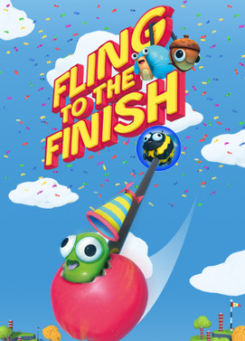

Fling to the Finish - Steam
En Fling to the Finish, equipos de dos jugadores corren por coloridos y caóticos circuitos de obstáculos mientras están unidos por una cuerda elástica.
Cuando tus amigos y tú empecéis a jugar, la cuerda se os enredará prácticamente en todas partes. Pero no tardaréis en mejorar vuestra capacidad de comunicación y descubriréis que la cuerda es vuestra mayor ventaja.
Los jugadores experimentados pueden usar la cuerda para balancearse y esquivar obstáculos peligrosos, así como para impulsar a su compañero antes de que caiga. Cuando un equipo domina el uso de su cuerda, ¡será capaz de realizar proezas acrobáticas imposibles en cualquier otro juego de plataformas!
¡Los equipos pueden demostrar su habilidad compitiendo en carreras online o locales con más jugadores!
Puesto que vas atado a tu compañero, Fling to the Finish es una experiencia cooperativa pura y dura. Si quieres, incluso es posible jugar a Fling to the Finish compartiendo el mismo mando con tu compañero.
Este tipo de control es estupendo para el cooperativo local y le añade una nueva dimensión al juego. ¡Tratad de no empujaros ni tiraros en la vida real mientras lo hacéis en el juego!
Todos los circuitos de Fling to the Finish tienen su propia temática y estilo. ¡Corre por parques flotantes, casinos gigantes y hasta campos de asteroides llenos de gusanos para llegar a la meta! Todos los obstáculos están diseñados para obligarte a usar la cuerda de forma ingeniosa, de forma que cada instante de juego está repleto de nuevas sorpresas y momentos memorables. El circuito también evoluciona para desafiarte a medida que juegas, así que todas las carreras son apasionantes. Nunca se sabe qué extraño obstáculo podrías encontrar a continuación.
Los rivales contraatacan con desatascadores, lastres y láseres perversos si quedan rezagados. Los objetos hacen que las carreras sean más interesantes y ayudan a equilibrarlas si hay jugadores más experimentados que otros.